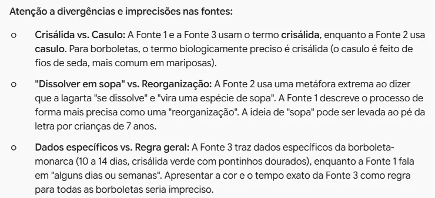
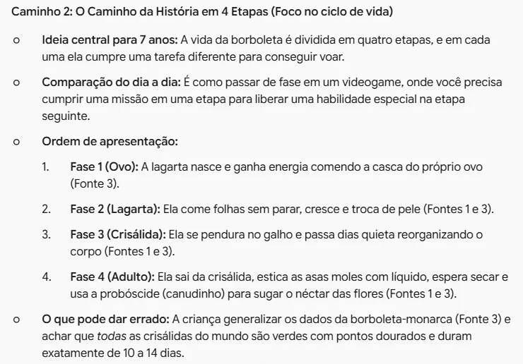
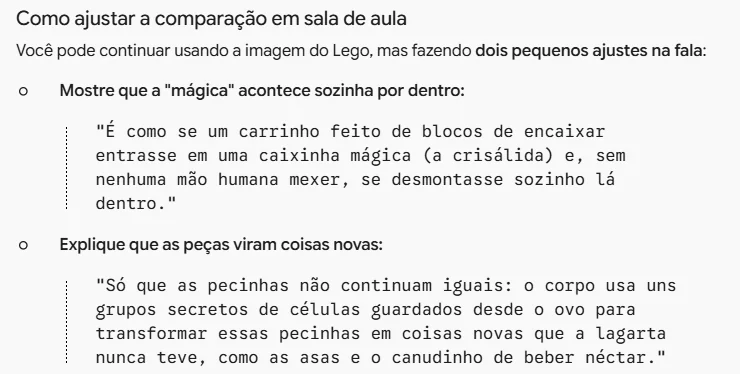
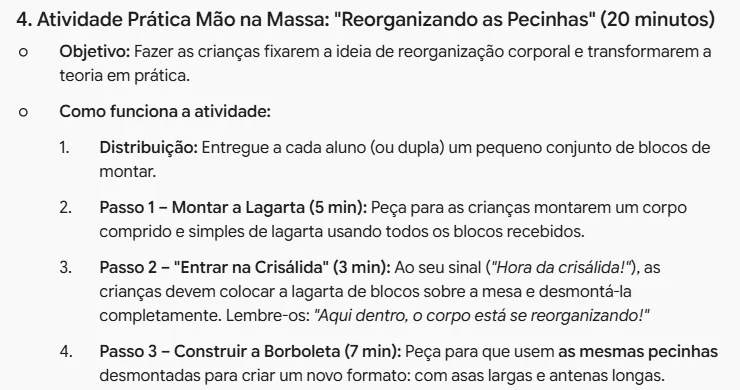

Explicar a metamorfose
Leve suas fontes ao Gemini e pense com ele o jeito mais didático de contar às crianças como a lagarta vira borboleta
As borboletas passam por metamorfose completa, com quatro fases…
Quando a lagarta entra no casulo, ela praticamente se dissolve!
crisálida verde com pontinhos dourados
- Ovoa lagarta come a própria casca
- Lagartacome folhas e troca de pele
- Crisálidao corpo se reorganiza por dentro
- Borboletaestica as asas, seca e voa
Junte o que você leu
- No exemplo, a aula é para o 2º ano: como a lagarta vira borboleta.
- Cada fonte explica de um jeito: o livro é preciso, mas difícil; o site é animado, mas exagera; as anotações trazem detalhes que encantam.
- Nenhuma delas está pronta para a criança. Escolher como explicar é o seu trabalho, e é nisso que a IA pode ajudar.

Abra o Gemini
- No computador ou Chromebook, com a conta @educa (institucional).
- Comece uma conversa nova. Ela vai durar vários pedidos, e cada um se apoia no anterior.
Vou dar uma aula de ciências para o 2º ano (7 anos) sobre como a lagarta vira borboleta. Juntei três fontes, abaixo. Não quero a aula pronta: quero pensar com você qual é o jeito mais didático de explicar isso para as crianças. Proponha três caminhos diferentes. Para cada um, diga: - a ideia central, em uma frase que uma criança de 7 anos entenda; - uma comparação com algo do dia a dia dela; - a ordem em que eu apresentaria; - o que pode dar errado: que ideia errada a criança pode levar para casa. Use só o que está nas fontes. Se alguma fonte estiver imprecisa ou discordar de outra, me avise. Fonte 1 (…): … Fonte 2 (…): … Fonte 3 (…): …
Peça caminhos, não a aula
- "Não quero a aula pronta": você quer opções para pensar, não um texto para ler em voz alta.
- "O que pode dar errado" é o pedido mais valioso: toda comparação simplifica, e algumas ensinam coisa errada.
- Cole as fontes no lugar das reticências, cada uma com o nome de onde veio.
Se o Gemini responder "Não consigo ajudar com isso" sem motivo, clique na seta circular abaixo da resposta e em Tentar de novo. Na simulação deste tutorial, isso aconteceu algumas vezes.

Leia os avisos primeiro
- Antes dos caminhos, o Gemini apontou o que nas fontes não serve como está.
- Casulo é de mariposa. A borboleta forma uma crisálida. O site errou, e o livro estava certo.
- A "sopa" pode ser levada ao pé da letra, e os 10 a 14 dias valem para a monarca, não para toda borboleta.

Compare os caminhos
- Vieram três: desmontar e montar (como blocos de encaixar), quatro etapas (como fases de videogame) e ferramentas secretas.
- Cada um diz de qual fonte veio cada parte e o risco que traz.
- Escolha pelo que você conhece da turma. No exemplo, o caminho 2, mas com a comparação dos blocos do caminho 1.

Teste a comparação
- Pergunte direto: "Essa comparação pode ensinar alguma coisa errada?"
- O Gemini viu dois riscos: a criança achar que alguém de fora monta a borboleta, e que as asas são peças antigas reaproveitadas.
- Mas a fala que ele sugeriu traz "caixinha mágica". Numa aula de ciências, a ideia é justamente que não é mágica. Você corta.

Peça o roteiro e revise
- Só depois de escolher o caminho, peça o roteiro: tempo de aula, recursos e uma atividade com as mãos.
- Diga também o que não quer, como a "caixinha mágica".
- Repare no passo 3 da atividade: "as mesmas pecinhas". É o erro que o próprio Gemini tinha avisado. Ajuste: entregue algumas peças de outra cor para as partes novas, como asas e antenas.
Confira o que vai dizer
- Interativo: toque em uma linha para ver como cada trecho das fontes virou fala de aula.
- Confirme os termos e os números no livro adotado ou numa fonte de museu ou universidade.
A IA ajudou a pensar e até achou erros nas fontes, mas também errou. A explicação que chega às crianças é sua: confira antes da aula.